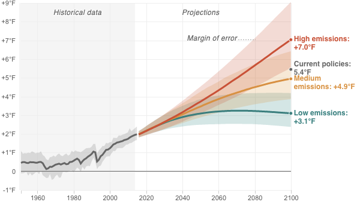

<%= await t.include("lib/_head.html") %>
<% if (COPY.labels.headline) { %>
<%= t.smarty(COPY.labels.headline) %>
<% } %>
<% if (COPY.labels.subhed) { %>
<%= t.smarty(COPY.labels.subhed) %>
<% } %>
aria-label="<%- COPY.labels.screenreader %>"
<% } %>
>

<%= await t.include("lib/_foot.html") %>